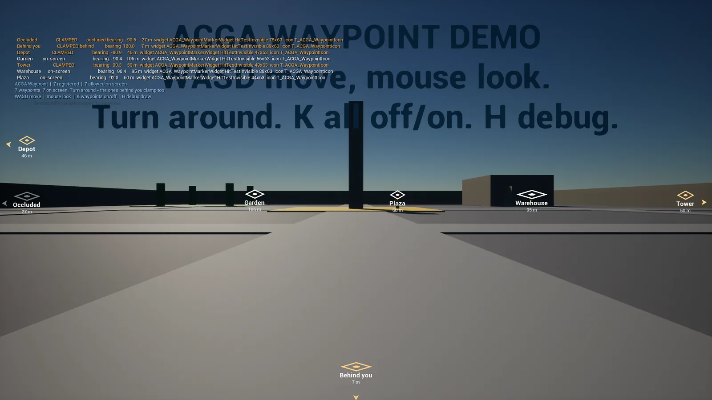
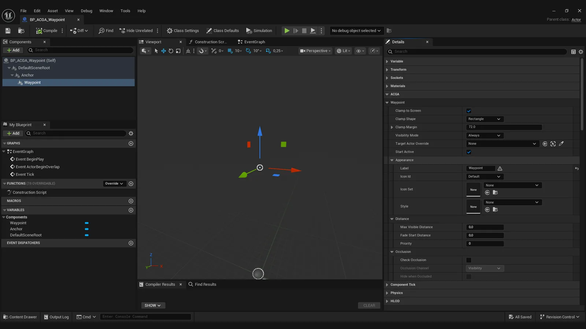

Spawn view: the waypoint behind the player pinned to the bottom edge, others clamped to both sides, and an occluded one greyed by a wall.
About the tool
Every game where the player has to find something in a 3D world needs an indicator that stays on screen and points the right way. These indicators tend to break in the same places: the marker vanishes or jumps when the target is behind the player, and the way the frame and arrow get added often breaks Blueprint access to the user's own widget.
The research before starting showed the gap was real: there was only one other C++ option on Fab, very recent and much more expensive. So the design goal was narrow and testable: correct behind the camera, drop-in on an existing project, and no new API to learn. The first playtest proved how hard the first part is: my first fix was mathematically right and still never ran (see below).
Key features
Works on any actor: add the Screen Waypoint component, or drag in the ready-made Blueprint.
Clamps to the screen edge, rectangle or ellipse, and stays correct when the target is behind the camera.
Distance and label, with fade and hide distances per marker.
Optional occlusion check with a shared trace budget, so a hundred markers do not cost a hundred traces a frame.
On-screen cap with priorities, and Blueprint events for clamped, occluded, shown and hidden.
Style and icon-set Data Assets to restyle it without UMG, or your own widget with the state already bound.
How it works
Enable the plugin and add the Screen Waypoint component (or BP_ACGA_Waypoint) to an objective, teammate or point of interest.
Set its label and icon; a marker appears straight away, with nothing to author first.
Adjust clamp shape, margin, distances, occlusion and priority in the Details panel.
Switch markers on and off from Blueprint, and react to their events, from the game logic you already have.
Design decisions
Behind the camera
Challenge
An indicator built on a screen-space Widget Component disappears when its target is behind the player, which is exactly when the player needs it most.
Iterations
Physically moving the component in front of the camera was ruled out: it fights the actor's attachment and makes the marker jump. My first implementation computed the clamp in view space instead, so a target behind gives a stable marker on the correct edge. The maths was correct and the first playtest still showed the marker vanishing. Reading the engine source showed why: the engine's widget layer hides any widget whose projection fails before the clamp hook is ever reached, so no clamp written after that point can run.
Final design
A projection proxy. While the target is behind, the subsystem parks only the component's cached transform just in front of the camera, so the projection succeeds and the clamp runs. The actor never moves, the real position is still what Blueprint reads, and the transform is recomputed from the truth when the target comes back into view.
Never wrap the user's widget
Challenge
The obvious way to add a frame and an arrow is to wrap the user's widget in another Slate widget, and in Unreal that makes Get User Widget Object return nothing. Every Blueprint node that used it silently stops working.
Iterations
Wrapping can be made to work, but only with guards, attribute getters for every editable value, and protection against the wrapper being rebuilt mid-game; each of those patches a symptom of the same decision, so I dropped the wrapper instead.
Final design
Nothing is wrapped. The component exposes clamped, bearing, distance and occlusion state, and the widget draws its own arrow. A default marker widget and a style asset ship with the plugin, so it works with nothing authored, and Get User Widget Object keeps working.
One pass for all markers
Challenge
One tick per marker means every marker repeats the same camera lookup and projection work.
Iterations
A tick per component is the default way to build it, and the work it repeats grows with every marker added.
Final design
A world subsystem updates every waypoint in one pass at a fixed rate, with one camera lookup and a shared budget for occlusion traces. The engine's own widget layer still draws them; the plugin does not claim to replace it.
Technical notes
Modules: a runtime module, plus a demo module (demo map and character) that can be deleted without affecting the product.
Dependencies: Core, CoreUObject, Engine, UMG, Slate, SlateCore, DeveloperSettings. Enhanced Input is listed only because the demo module uses it.
Drop-in: a subclass of the engine's Widget Component, so there is no new API; nothing to reparent, and removing the component leaves the project as it was.
Verification: a self-playing automation test plays the demo map on 5.6 and 5.8; built warning-free on 5.6, 5.7 and 5.8.
Limitations: not replicated (markers are local and cosmetic), no world-space billboard mode, no VR, placeholder icon art. Markers pinned to the same screen edge are not spread apart yet, so labels can overlap when several targets lie in the same direction; that is planned for v1.1.
Gallery

The debug view: state, bearing, widget and icon of every waypoint, listed on screen.

The ready-made waypoint Blueprint in the editor, with every setting in the Details panel.